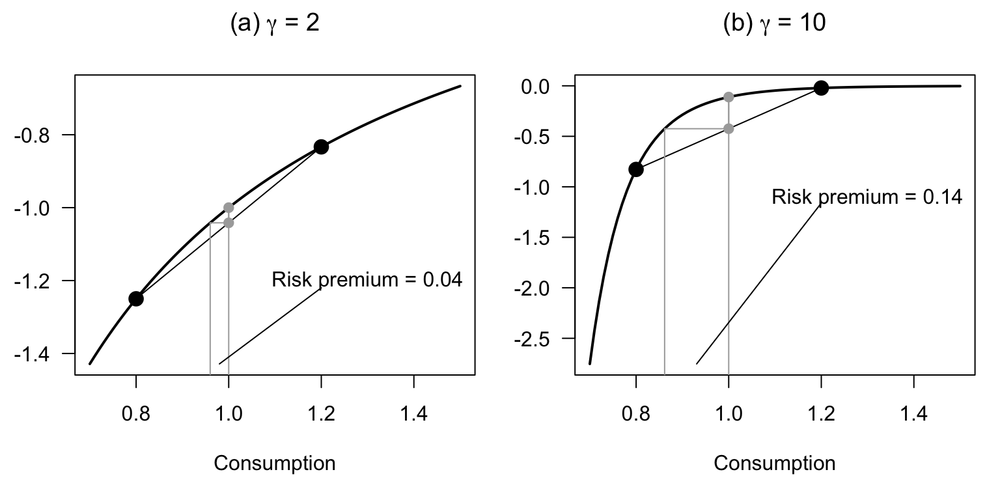
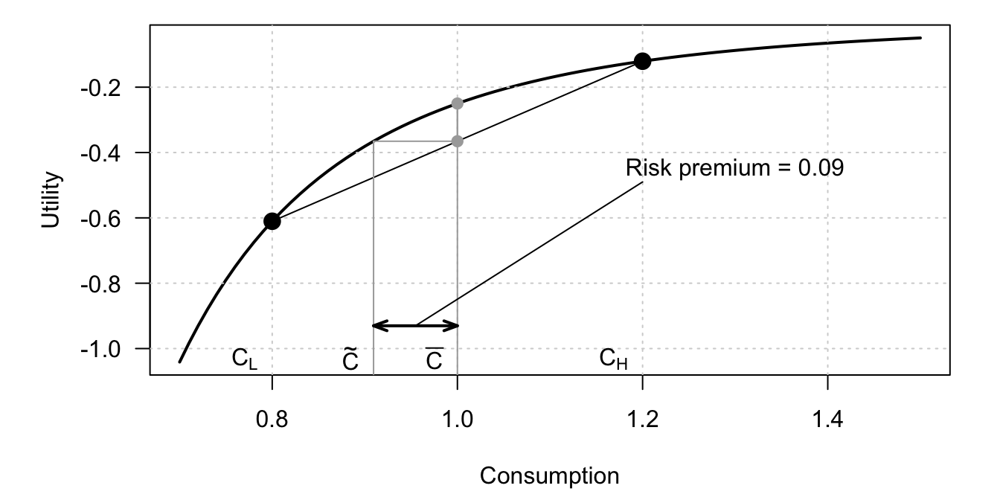
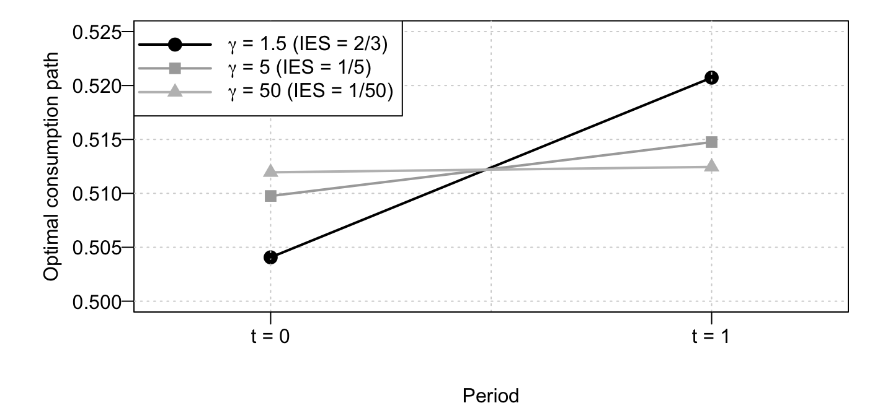
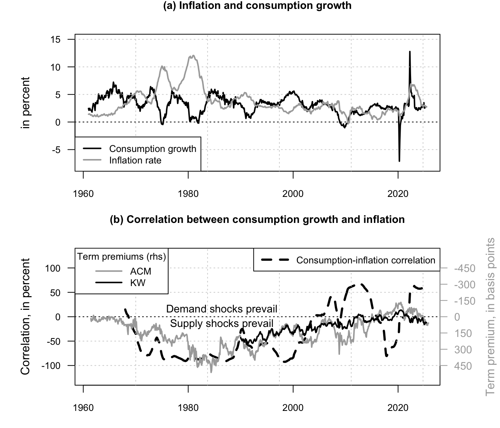
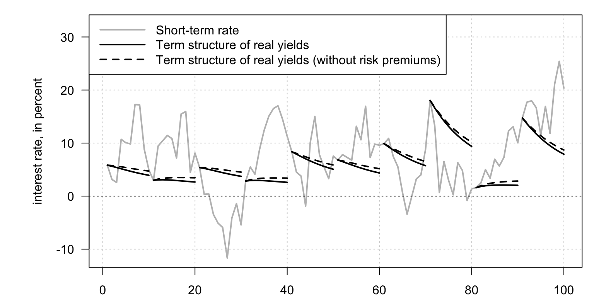
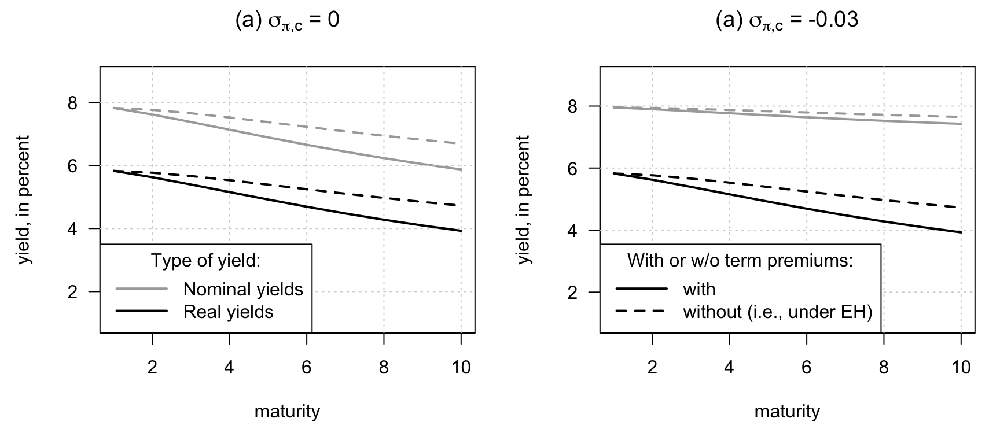

Chapter 11 Consumption Capital Asset Pricing Model
11.1 Risk aversion and intertemporal substitution in the CCAPM
This example contrasts the roles of risk aversion and intertemporal substitution in the CCAPM.
Code
# Purpose: This example contrasts the roles of risk aversion and intertemporal substitution in
# the CCAPM
# Define the two-state consumption lottery.
C.l <- .8
C.h <- 1.2
cc <- c(C.l,C.h)
par(mfrow=c(1,2))
par(plt=c(.15,.95,.25,.85))
C <- seq(.7,1.5,by=.01)
# Plot certainty equivalents for moderate risk aversion.
gamma <- 2
E.u <- mean(cc^(1-gamma)/(1-gamma))
c.CE <- (E.u*(1-gamma))^(1/(1-gamma))
U <- C^(1-gamma)/(1-gamma)
plot(C,U,type="l",lwd=2,las=1,
xlab="Consumption",ylab="Utility",
main=expression(paste("(a) ",gamma," = 2",sep="")))
points(cc,cc^(1-gamma)/(1-gamma),pch=19,col="black",cex=1.5)
lines(cc,cc^(1-gamma)/(1-gamma),col="black")
lines(c(c.CE,mean(cc)),c(E.u,E.u),lty=1,col="darkgrey",lwd=1)
lines(c(c.CE,c.CE),c(-1000,E.u),lty=1,col="darkgrey",lwd=1)
lines(c(mean(cc),mean(cc)),c(-1000,1/(1-gamma)),lty=1,col="darkgrey",lwd=1)
points(c(1,1),c(mean(cc^(1-gamma)/(1-gamma)),1/(1-gamma)),col="darkgrey",pch=19)
lines(c(1,1),c(mean(cc^(1-gamma)/(1-gamma)),1/(1-gamma)),col="darkgrey")
rp <- - mean(cc^(1-gamma)/(1-gamma)) + 1/(1-gamma)
# Annotate the certainty equivalent and the risk-premium gap.
text(x = 1.3,y=1/(1-gamma) - .2,
labels = paste("Risk premium = ",toString(round(mean(cc)-c.CE,2)),sep=""),
col="black")
lines(c(mean(c(c.CE,1)),1.2),c(C[1]^(1-gamma)/(1-gamma),1/(1-gamma) - .22),col="black")
# Repeat the same construction with higher risk aversion.
gamma <- 10
E.u <- mean(cc^(1-gamma)/(1-gamma))
c.CE <- (E.u*(1-gamma))^(1/(1-gamma))
U <- C^(1-gamma)/(1-gamma)
plot(C,U,type="l",lwd=2,las=1,
xlab="Consumption",ylab="Utility",
main=expression(paste("(b) ",gamma," = 10",sep="")))
points(cc,cc^(1-gamma)/(1-gamma),pch=19,col="black",cex=1.5)
lines(cc,cc^(1-gamma)/(1-gamma),col="black")
lines(c(c.CE,mean(cc)),c(E.u,E.u),lty=1,col="darkgrey",lwd=1)
lines(c(c.CE,c.CE),c(-1000,E.u),lty=1,col="darkgrey",lwd=1)
lines(c(mean(cc),mean(cc)),c(-1000,1/(1-gamma)),lty=1,col="darkgrey",lwd=1)
points(c(1,1),c(mean(cc^(1-gamma)/(1-gamma)),1/(1-gamma)),col="darkgrey",pch=19)
lines(c(1,1),c(mean(cc^(1-gamma)/(1-gamma)),1/(1-gamma)),col="darkgrey")
rp <- - mean(cc^(1-gamma)/(1-gamma)) + 1/(1-gamma)
text(x = 1.3,y=1/(1-gamma) - 1,
labels = paste("Risk premium = ",toString(round(mean(cc)-c.CE,2)),sep=""),
col="black")
lines(c(mean(c(c.CE,1)),1.2),c(C[1]^(1-gamma)/(1-gamma),1/(1-gamma) - 1.05),col="black")
11.2 Asset-pricing implications of risk-aversion and EIS calibrations
This example visualizes asset-pricing implications of different risk-aversion and EIS calibrations.
Code
# Purpose: This example visualizes asset-pricing implications of different risk-aversion and EIS
# calibrations
# Define the two-state consumption lottery.
C.l <- .8
C.h <- 1.2
cc <- c(C.l,C.h)
par(mfrow=c(1,1))
par(plt=c(.15,.95,.25,.95))
C <- seq(.7,1.5,by=.01)
# Plot the certainty equivalent and the implied risk premium.
gamma <- 5
E.u <- mean(cc^(1-gamma)/(1-gamma))
c.CE <- (E.u*(1-gamma))^(1/(1-gamma))
U <- C^(1-gamma)/(1-gamma)
plot(C,U,type="l",lwd=2,las=1,
xlab="Consumption",ylab="Utility")
grid()
points(cc,cc^(1-gamma)/(1-gamma),pch=19,col="black",cex=1.5)
lines(cc,cc^(1-gamma)/(1-gamma),col="black")
lines(c(c.CE,mean(cc)),c(E.u,E.u),lty=1,col="darkgrey",lwd=1)
lines(c(c.CE,c.CE),c(-1000,E.u),lty=1,col="darkgrey",lwd=1)
lines(c(mean(cc),mean(cc)),c(-1000,1/(1-gamma)),lty=1,col="darkgrey",lwd=1)
points(c(1,1),c(mean(cc^(1-gamma)/(1-gamma)),1/(1-gamma)),col="darkgrey",pch=19)
lines(c(1,1),c(mean(cc^(1-gamma)/(1-gamma)),1/(1-gamma)),col="darkgrey")
rp <- - mean(cc^(1-gamma)/(1-gamma)) + 1/(1-gamma)
text(x = 1.3,y=1/(1-gamma) - .2,
labels = paste("Risk premium = ",toString(round(mean(cc)-c.CE,2)),sep=""),
col="black")
lines(c(mean(c(c.CE,1)),1.2),c(C[3]^(1-gamma)/(1-gamma),1/(1-gamma) - .24),col="black")
text(x=C.l,y=min(U),labels = expression(C[L]),pos=2)
text(x=C.h,y=min(U),labels = expression(C[H]),pos=2)
text(x=c.CE,y=min(U),labels = expression(tilde(C)),pos=2)
text(x=1,y=min(U),labels = expression(bar(C)),pos=2)
# Mark the risk-premium distance on the consumption axis.
arrows(c.CE,C[3]^(1-gamma)/(1-gamma),1,C[3]^(1-gamma)/(1-gamma),lwd=2,
angle = 20,code = 3,length = 0.1)
The following codes makes a table that illustrates the equity premium puzzle.
This table summarizes the long-run joint behavior of macro-financial variables used in the CCAPM discussion.
Code
# Purpose: This table summarizes the long-run joint behavior of macro-financial variables used
# in the CCAPM discussion
library(DTAM)
lag_exp_infl <- 5 # order of moving average process used to capture inflation expectations
matrix_periods <- rbind(c(1950,2019),
c(1980,2019))
list.of.JST.ctries <- levels(as.factor(JSTdataset$iso))
matrix_corresp_ctries <- rbind(c("AUS","BEL","CHE","DEU","DNK","ESP",
"FIN","FRA","GBR","ITA","JPN","NLD","NOR",
"PRT","SWE","USA"),
c("Australia","Belgium","Switzerland","Germany",
"Denmark","Spain","Finland","France","U.K.",
"Italy","Japan","Netherlands","Norway",
"Portugal","Sweden","U.S.A."))
# outputs: Sample-period,
# Average excess return, sd(return), sd(dc), Cor(dc,er), Cov(dc,er),
# Sharpe ratio, RRA1, RRA2
matrix_result <- array(NaN,c(length(list.of.JST.ctries),9,dim(matrix_periods)[1]))
DATA <- JSTdataset[, c("year", "iso", "cpi", "stir", "eq_tr", "rconsbarro")]
for(period in 1:dim(matrix_periods)[1]){
first.year <- matrix_periods[period,1]
last.year <- matrix_periods[period,2]
count_ctry <- 0
for(ctry in list.of.JST.ctries){
count_ctry <- count_ctry + 1
DATA.reduced <- subset(DATA,iso==ctry)
T <- dim(DATA.reduced)[1]
DATA.reduced$dc <- NaN
DATA.reduced$dc <-
c(NaN,log(DATA.reduced$rconsbarro[2:T]/DATA.reduced$rconsbarro[1:(T-1)]))
DATA.reduced$eq_tr
DATA.reduced$infl <-
c(NaN,log(DATA.reduced$cpi[2:T]/DATA.reduced$cpi[1:(T-1)]))
DATA.reduced$exp_infl <- 0
for(i in 1:lag_exp_infl){
DATA.reduced$exp_infl <- DATA.reduced$exp_infl + 1/lag_exp_infl*
c(rep(NaN,i),DATA.reduced$infl[1:(T-i)])
}
DATA.reduced$rstir <- DATA.reduced$stir/100 - DATA.reduced$exp_infl
DATA.reduced$req_tr <- DATA.reduced$eq_tr - DATA.reduced$infl
DATA.reduced <- DATA.reduced[which(DATA.reduced$year==first.year):
which(DATA.reduced$year==last.year),]
sample <- range(DATA.reduced$year[complete.cases(DATA.reduced)])
DATA.reduced$Excess_return <- DATA.reduced$req_tr - DATA.reduced$rstir
mean_er <- mean(DATA.reduced$Excess_return,na.rm=TRUE)
sd_er <- sd(DATA.reduced$Excess_return,na.rm=TRUE)
sd_dc <- sd(DATA.reduced$dc,na.rm=TRUE)
cor_er_dc <- cor(DATA.reduced$dc,DATA.reduced$req_tr,use="complete.obs")
cov_er_dc <- cov(DATA.reduced$dc,DATA.reduced$req_tr,use="complete.obs")
SR <- mean_er/sd_er
mean_Rf <- mean(DATA.reduced$rstir,na.rm=TRUE)
RRA1 <- mean_er/(1 + mean_Rf)/cov_er_dc
RRA2 <- mean_er/(1 + mean_Rf)/sd_er/sd_dc
matrix_result[count_ctry,,period] <-
c(paste(sample[1],"-",sample[2],sep=""),
round(100*mean_Rf,2),
round(100*mean_er,2),round(100*sd_er,2),
round(100*sd_dc,2),
round(cor_er_dc,2),
round(SR,2),round(RRA1,1),round(RRA2,1))
}
}
make_entry <- function(x,format.nb){
output <- paste("$",sprintf(paste("%.",format.nb,"f",sep=""),x),"$",sep="")
return(output)
}
format.nb <- 2
# Build LaTeX table
latex.table <- paste0(
"Country&Sample&$\\widetilde{R}_f$&$\\overline{er}$&$\\sigma(er)$",
"&$\\sigma(\\Delta c)$&$\\rho(\\Delta c,er)$&$SR$",
"&$RRA1$&$RRA2$\\\\"
)
for(period in 1:dim(matrix_periods)[1]){
latex.table <- rbind(latex.table,
"\\hline",
paste("&\\multicolumn{9}{l}{\\textbf{",LETTERS[period],". Sample: ",
matrix_periods[period,1],"-",matrix_periods[period,2],"}}\\\\",sep=""),
"\\hline")
count_ctry <- 0
for(ctry in list.of.JST.ctries){
count_ctry <- count_ctry + 1
this.line <- matrix_corresp_ctries[2,which(ctry==matrix_corresp_ctries[1,])]
for(j in 1:dim(matrix_result)[2]){
if(j==1){
this.line <- paste(this.line,"&",
matrix_result[count_ctry,j,period],sep="")
}else{
num_value <- as.numeric(matrix_result[count_ctry,j,period])
if((num_value<0)&(j>7)){
this.line <- paste(this.line,"&$ < 0$",sep="")
}else{
this.line <- paste(this.line,"&",make_entry(num_value,format.nb),sep="")
}
}
}
latex.table <- rbind(latex.table,
paste(this.line,"\\\\",sep=""))
}
}
latex.table <- rbind(latex.table,
"\\hline")
latex.file <- paste("tables/table_EquityPuzzle.txt",sep="")
write(latex.table, file = latex.file)The following code illustrates the link between IES and smoothness of the optimal consumption path.
11.3 Smoothing preferences affect consumption and pricing dynamics
This example shows how smoothing preferences affect consumption and pricing dynamics.
Code
# Purpose: This example shows how smoothing preferences affect consumption and pricing dynamics
par(mfrow=c(1,1))
par(plt=c(.15,.95,.25,.95))
# Set the two-period saving problem.
W <- 1
delta <- 1
R <- .05
# Compute and plot optimal consumption paths for several IES values.
gamma <- 1.5
C1 <- W * (1 + R) / ((1/delta * 1/(1+R))^(-1/gamma) + (1+R))
C2 <- (W - C1) * (1 + R)
par(mgp = c(3, 0.5, 0))
# Draw the baseline path before overlaying alternative IES cases.
plot(c(C1,C2),pch=19,xlab="Period",ylab="Optimal consumption path",ylim=c(.50,.525),
xaxt="n",xlim=c(.75,2.25),lwd=2,cex=1.3,las=1)
grid()
axis(side=1,at=c(1,2),labels=c("t = 0","t = 1"))
lines(c(C1,C2),lwd=2)
gamma <- 5
C1 <- W * (1 + R) / ((1/delta * 1/(1+R))^(-1/gamma) + (1+R))
C2 <- (W - C1) * (1 + R)
points(c(C1,C2),pch=15,col="darkgrey",cex=1.3)
lines(c(C1,C2),col="darkgrey",lwd=2)
gamma <- 50
C1 <- W * (1 + R) / ((1/delta * 1/(1+R))^(-1/gamma) + (1+R))
C2 <- (W - C1) * (1 + R)
points(c(C1,C2),pch=17,col="grey",cex=1.3)
lines(c(C1,C2),col="grey",lwd=2)
legend("topleft",
c(expression(paste(gamma," = 1.5"," (IES = 2/3)",sep="")),
expression(paste(gamma," = 5"," (IES = 1/5)",sep="")),
expression(paste(gamma," = 50"," (IES = 1/50)",sep=""))
),
pt.bg = c("black","darkgrey","grey"),
lty=c(1,1), # gives the legend appropriate symbols (lines)
lwd=c(2,2), # line width
pch=c(19,15,17),
pt.cex = 1.3,
col= c("black","darkgrey","grey"), # gives the legend lines the correct color and width
seg.len = 4
)
The following code shows the time-varying conditional correlation between consumption and inflation.
11.4 Empirical correlations between key macro-financial variables
This example reports empirical correlations between key macro-financial variables.
Code
# Purpose: This example reports empirical correlations between key macro-financial variables
library(DTAM)
# Build consumption-growth and inflation series at a two-year horizon.
vec_dates <- as.Date(Data_Macro_US_monthly$date)
CONSO <- Data_Macro_US_monthly$RCONS
CPI <- Data_Macro_US_monthly$CPIAUCSL
h <- 24
T <- length(CPI)
conso <- 100*(12/h)*log(CONSO[(h+1):T]/CONSO[1:(T-h)])
inflation <- 100*(12/h)*log(CPI[(h+1):T]/CPI[1:(T-h)])
# Compute rolling correlations.
correla <- NaN*inflation
rwindow <- 12*7
for(t in (rwindow+1):(T-h)){
correla[t] <- cor(conso[(t-rwindow+1):t],inflation[(t-rwindow+1):t])
}
par(mfrow=c(2,1))
par(plt=c(0.15,0.88,0.2,0.84))
layout(matrix(c(1,2)), heights=c(2, 2))
# Plot consumption growth and inflation.
plot(vec_dates[(h+1):T],conso,type='l',
ylim=c(-8,15),col="black",lty=1,lwd=2,cex.axis=.8,cex=.8,las=1,
ylab="in percent",xlab="",main="(a) Inflation and consumption growth",cex.main=.9)
grid()
abline(h=0,col="black",lty=3)
lines(vec_dates[(h+1):T],inflation,col="darkgrey",lwd=2)
legend("bottomleft",
c("Consumption growth","Inflation rate"),
lty=c(1,1), # gives the legend appropriate symbols (lines)
lwd=c(2,2), # line width
col=c("black","darkgrey"), # gives the legend lines the correct color and width
cex=.8# size of the text
)
# Plot the rolling correlation together with term-premium estimates.
plot(vec_dates[(h+1):T],100*correla,col="black",type="l",
lwd=3,ylim=c(-130,130),lty=2,
ylab="Correlation, in percent",xlab="",cex.axis=.8,cex=.8,las=1,
main="(b) Correlation between consumption growth and inflation",cex.main=.9)
grid()
abline(h=0,col="black",lty=3)
text(vec_dates[330],-15,labels="Supply shocks prevail",cex=.9)
text(vec_dates[330],+15,labels="Demand shocks prevail",cex=.9)
values.TP <- seq(-450,450,by=150)
location.ticks <- -values.TP/4.5
axis(4,at=-location.ticks,
labels = paste(-values.TP,"",sep=""),
col="darkgrey",col.axis="darkgrey",las=1,cex.axis=.9)
mtext("Term premium, in basis points", side=4, line=3,col="darkgrey")
lines(ACMTermPremium$date,-100/4.5*ACMTermPremium$ACMTP10,
col="darkgrey",lwd=2)
lines(Data_Macro_US_monthly$date,
-100/4.5*Data_Macro_US_monthly$THREEFYTP10,col="black",lwd=2,lty=1)
legend("topleft",
title="Term premiums (rhs)",
c("ACM","KW"),
lty=c(1,1), # gives the legend appropriate symbols (lines)
lwd=c(2,2), # line width
seg.len = 3,
col=c("darkgrey","black"), # gives the legend lines the correct color and width
cex=.8# size of the text
)
legend("topright",
c("Consumption-inflation correlation"),
lty=c(2), # gives the legend appropriate symbols (lines)
lwd=c(3), # line width
seg.len = 3,
col=c("black"), # gives the legend lines the correct color and width
cex=.8# size of the text
)
The following code creates a figure that displays a simluated path for the short-term rate, and shows the term structure of interest rates at different point in times.
11.5 Term structures under a CCAPM-based pricing kernel
This example simulates term structures implied by a CCAPM-based pricing kernel.
Code
# Purpose: This example simulates term structures implied by a CCAPM-based pricing kernel
library(DTAM)
set.seed(123)
phi <- 0.8
mu <- 0.005
sigma.bar <- .01 # unconditional std dev of growth
sigma2 <- sigma.bar^2 * (1 - phi^2)
sigma.c <- sqrt(sigma2)
gamma <- 10
delta <- 0.99
# Determine specification of real short-term rate:
eta.0 <- -log(delta) + mu * gamma * (1 - phi) -
gamma^2 * sigma.c^2 / 2
eta.1 <- gamma * phi
# Specify the model:
psi.parameterization <- list(
mu = matrix(mu * (1-phi)),
Phi = matrix(phi),
Sigma = matrix(sigma.c^2))
# Use reverse-order multi-horizon LT to price ZC bonds:
h = 10 # maximum maturity
u2 <- matrix(-gamma)
u1 <- matrix(-gamma)
AB <- reverse_MHLT(psi_GaussianVAR,u1,u2,H=h,psi.parameterization)
a.h <- -c(AB$A)/(1:h)
b.h <- - log(delta) + -c(AB$B)/(1:h)
# Under EH:
u2 <- matrix(- eta.1)
u1 <- matrix(0)
AB <- reverse_MHLT(psi_GaussianVAR,u1,u2,H=h,psi.parameterization)
a.h.EH <- -c(AB$A - eta.1)/(1:h)
b.h.EH <- eta.0 - c(AB$B)/(1:h)
# Simulate growth:
model <- list(mu=mu*(1-phi),
Phi=as.matrix(phi),
Sigma12=as.matrix(sigma.c))
T <- 100
x.sim <- simul_GaussianVAR(model,nb.sim=T)
r.t <- (eta.0 + eta.1 * x.sim)
# Prepare plots:
par(mfrow=c(1,1))
par(plt=c(.15,.98,.1,.95))
plot(100*r.t,type="l",xlab="",ylab="interest rate, in percent",
ylim=100*c(min(r.t),
max(r.t)+.07),las=1,
lwd=2,col="grey")
grid()
abline(h=0,lty=3)
for(t in seq(1,T,by=10)){
lines(t+(1:h)-1,100*(b.h + a.h * x.sim[t]),col="black",lwd=2)
lines(t+(1:h)-1,100*(b.h.EH + a.h.EH * x.sim[t]),col="black",lwd=2,lty=2)}
legend("topleft",
c("Short-term rate","Term structure of real yields",
"Term structure of real yields (without risk premiums)"),
lwd=c(2),lty=c(1,1,2),col=c("grey","black","black"),seg.len = 4)
The following code produces a figure illustrating the real term premium.
11.7 Model-implied yield-curve moments with CCAPM restrictions
This example compares model-implied yield-curve moments with CCAPM restrictions.
Code
# Purpose: This example compares model-implied yield-curve moments with CCAPM restrictions
library(DTAM)
values_sigma.pi.c <- c(0,-.03)
title_plot <- c(
expression(paste("(a) ",sigma[pi*','*c]," = 0",sep="")),
expression(paste("(a) ",sigma[pi*','*c]," = -0.03",sep=""))
)
par(plt=c(.2,.95,.25,.85))
par(mfrow=c(1,2))
pi_bar <- .02
phi_pi <- .8
sigma.pi <- .01
count_plot <- 0
for(sigma.pi.c in values_sigma.pi.c){
count_plot <- count_plot + 1
# Determine specification of nominal short-term rate:
eta.0.i <- -log(delta) + mu * gamma * (1 - phi) + pi_bar *
(1 - phi_pi) - (gamma*sigma.c + sigma.pi.c)^2/2 - sigma.pi^2/2
eta.1.i <- matrix(c(gamma * phi,phi_pi),2,1)
# Specify the model:
psi.parameterization <- list(
mu = matrix(c(mu*(1-phi),pi_bar*(1-phi_pi)),2,1),
Phi = diag(c(phi,phi_pi)),
Sigma = matrix(c(sigma.c^2,sigma.c*sigma.pi.c,sigma.c*
sigma.pi.c,sigma.pi^2+sigma.pi.c^2),2,2))
# Use reverse-order multi-horizon LT to price ZC bonds:
u2 <- matrix(c(-gamma,-1),2,1);u1 <- matrix(c(-gamma,-1),2,1)
AB <- reverse_MHLT(psi_GaussianVAR,u1,u2,H=h,psi.parameterization)
a.h.i <- -matrix(AB$A,2,h)/t(matrix((1:h),h,2))
b.h.i <- -log(delta) + -c(AB$B)/(1:h)
# Under EH:
u2 <- matrix(- eta.1.i);u1 <- matrix(0,2,1)
AB <- reverse_MHLT(psi_GaussianVAR,u1,u2,H=h,psi.parameterization)
a.h.i.EH <- -(matrix(AB$A,2,h)-
matrix(eta.1.i,2,h))/t(matrix((1:h),h,2))
b.h.i.EH <- eta.0.i - c(AB$B)/(1:h)
# Average yield curves:
avg.i.h <- b.h.i + matrix(c(mu,pi_bar),1,2) %*% a.h.i
avg.i.h.EH <- b.h.i.EH + matrix(c(mu,pi_bar),1,2) %*% a.h.i.EH
plot(100*c(avg.i.h),type="l",lwd=2,col="darkgrey",lty=1,
ylim=100*c(.01,max(avg.i.h)+.01),
main=title_plot[count_plot],
xlab="maturity",ylab="yield, in percent",las=1);grid()
lines(100*c(avg.i.h.EH),type="l",lwd=2,col="darkgrey",lty=2)
lines(100*(b.h+a.h*mu),lwd=2,col="black")
lines(100*(b.h.EH+a.h.EH*mu),lwd=2,col="black",lty=2)
if(count_plot==1){
legend("bottomleft",title="Type of yield:",
c("Nominal yields",
"Real yields"),
lwd=c(2),lty=c(1,1),col=c("darkgrey","black"),seg.len = 3)
}
if(count_plot==2){
legend("bottomleft",title="With or w/o term premiums:",
c("with",
"without (i.e., under EH)"),
lwd=c(2),lty=c(1,2),col=c("black"),seg.len = 3)
}
}